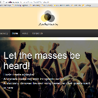

Projects
To accompany my theory-based Cinema and Media Studies major, I produce media in a variety of forms including: photography, videos/film, web designs, software, and digital art. Most of these skills are self-taught, aside from python programming and video production, which I've taken college courses in. Check out some of my work below.
Web Design/Development
Audiocracy

Description: Democratize your party playlists; have your guests contribute to one unified playlist; no DJ required.
Status: Ongoing
Skills used: HTML, CSS, Bootstrap, some Javascript
Partners?: Yes, Galen Chuang and Julia Han
Ryouri Restaurant Website

Description: Engage with Japanese culture and cuisine at Ryouri Restaurant. Note: not a real restaurant.
Status: On hiatus (until I learn PHP)
Skills used: HTML, CSS, Bootstrap, some Javascript
Partners?: No
Nourish Int'l E-Newsletter

Description: A thank you e-newsletter for people who donated to Nourish during the 2015 Giving Challenge. Optimized for gmail.
Status: Complete
Skills used: HTML table layout, inline CSS
Partners?: No
Software Development
GenkiFLASH

Description: A flash-card program for Japanese language learners, based on the curriculum from Eri Banno's Genki I textbook and workbook set.
Status: Ongoing
Skills used: Python (with Tkinter GUI)
Partners?: None
Photography
The photos in the following gallery were taken with a Canon EOS REBEL T1i DSLR. Click the item in the gallery to view a full version.

FL: 24mm,
Shutter: 1/3200s

FL: 55mm,
Shutter: 1/4000s

FL: 51mm,
Shutter: 1/4000s

FL: 49mm,
Shutter: 1/4000s

FL: 18mm,
Shutter: 1/80s

FL: 18mm,
Shutter: 1/80s

FL: 25mm,
Shutter: 1/100s

FL: 25mm,
Shutter: 1/100s

FL: 21mm,
Shutter: 1/1000s

FL: 25mm,
Shutter: 1/1600s
Videography
Production Note: All of the following videos were filmed using a Canon XA-10 or XA-20 digital video camera. The WCTV segments are all shot in a period of 1-3 hours, with minimal sound and lighting equipment.
WCTV S8 E1: Signs Your Life Is a Rom-Com
Filmed by Bianca Morris
Is your relationship too good to be true? Look out! You might be living in a romantic comedy... watch on for five sure signs that your life is actually a chick-flick!
View the full episode here.
Viewing Note: This page performs best in Google Chrome or Firefox. Additionally, the video quality has been reduced, so as not to take up excessive server space. To view the clips in high quality, click the link in the file's description. More videos will be added periodically.
Digital Art
2016 Yuki Matsuri T-Shirt
Design Contest Winner
Description: My entry for Japan Club's 2016 Yuki Matsuri T-shirt Design contest. Over 50 shirts were printed and sold at Yuki Matsuri.
Status: Complete
Skills used: Adobe Illustrator
Partners?: None
{kind=link}
Church vs State
T-Shirt
Description: A t-shirt design I dreamed up in high school, and didn't think I'd ever have the skills to create.
Status: Complete.
Skills used: Adobe Illustrator
Partners?: None